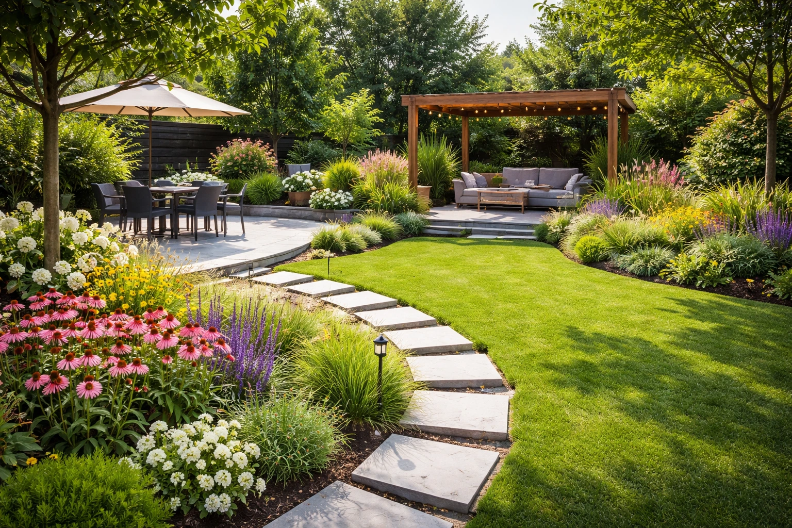
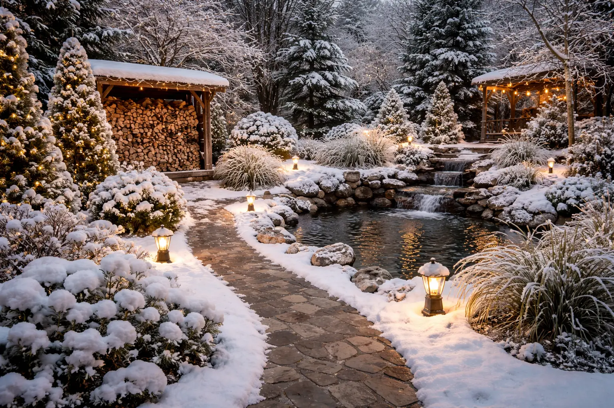
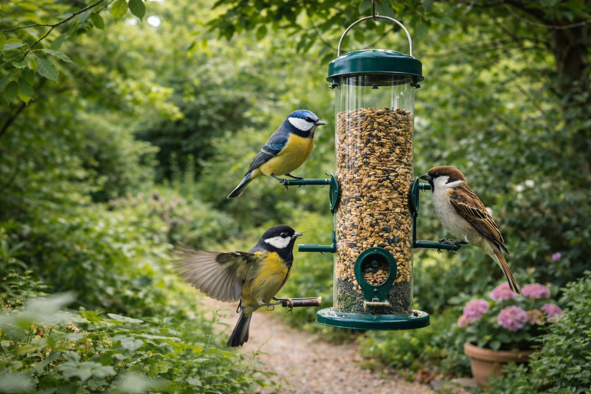
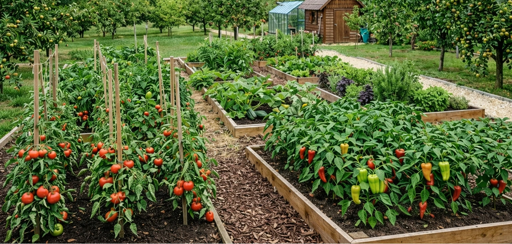
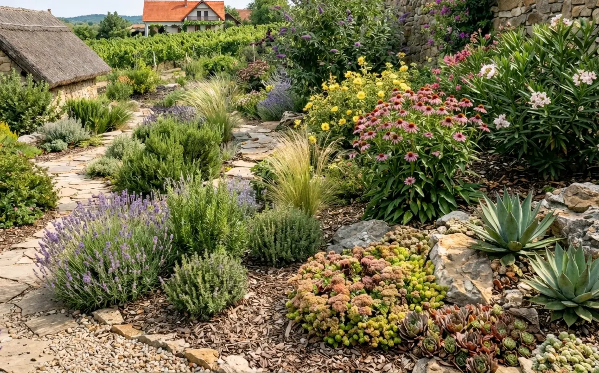
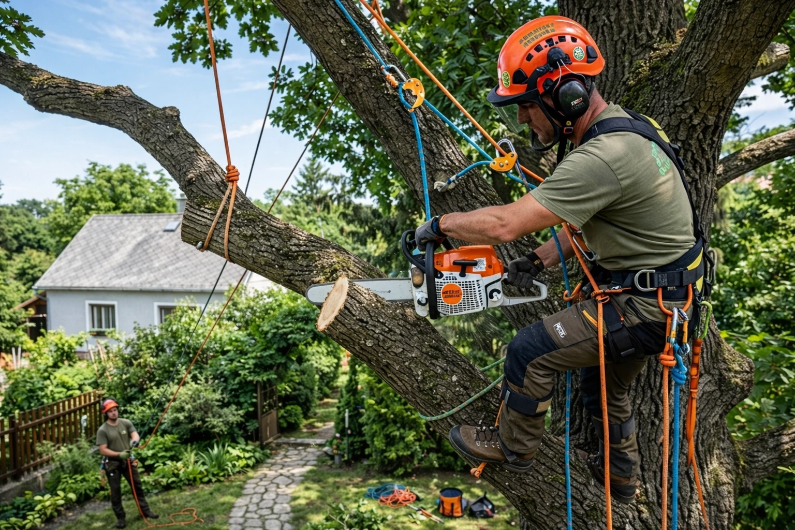
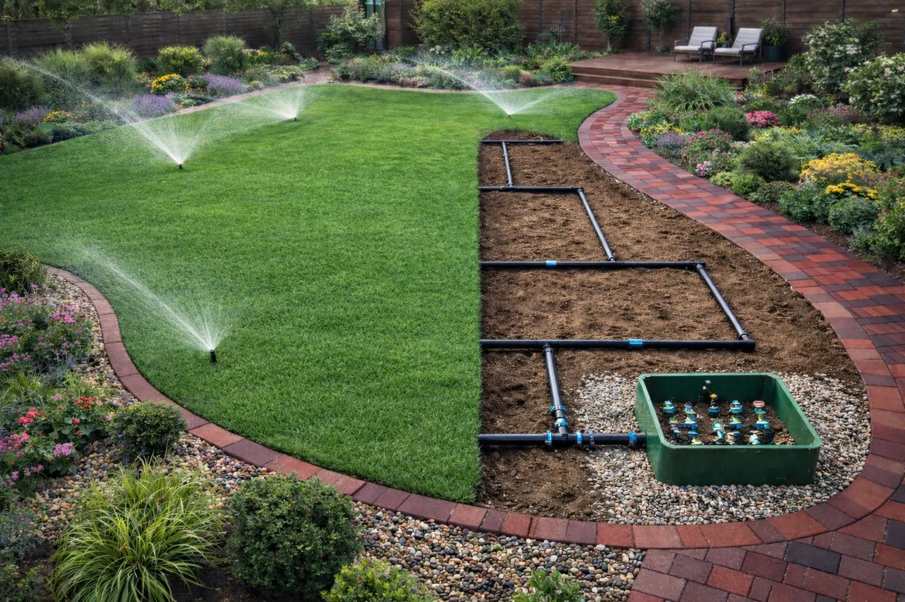

Célunk olyan kertek létrehozása, amelyek egyszerre egyediek, élvezhetők és funkcionálisak. Hiszünk abban, hogy a kert nemcsak szép díszlet, hanem élő ökoszisztéma is lehet: növényeinkkel segítjük a beporzókat (méheket, pillangókat) és a madarakat, így növeljük a biodiverzitást és a természetes kártevő-ellenőrzést
Cégünk vállalja magán- és vállalati ügyfelek teljes körű ellátását, Magyarország bármely pontján. Akár egy zöld, funkcionális játszóteret, akár letisztult, elegáns díszkertet szeretnél – csapatunk minden igényt magas színvonalon kiszolgál.
A kert tavaszi „felébresztése” egész évre alapot ad. Először is gondosan eltávolítjuk a téli lombhulladékot és elhalt növényi részeket, hogy megakadályozzuk a...

A nyári szezonban a folyamatos öntözés és gondos karbantartás a legfontosabb. A növényeket célszerű kora reggel vagy este öntözni, amikor kevesebb a párolgás, így a víz közvetlenül a...
Ősszel betakarítjuk a nyári terméseket, és megtisztítjuk a kertet az elhalt egynyári növényektől és lehullott levelektől. Ezáltal a kórtani kockázat csökken, és a talaj tápanyagdús komposztal...

A téli hónapokban a kert pihen, a feladatok általában a téliesítés körül forognak. A nehezebb metszéseket és ritkításokat is ekkor érdemes elvégezni, mert a növények ekkor...

Ma már nem elegendő pusztán szép kerteket építeni: egy jól tervezett kert támogatja a természetes ökoszisztémát is. Különösen fontos, hogy...
Ma már nem elegendő pusztán szép kerteket építeni: egy jól tervezett kert támogatja a természetes ökoszisztémát is. Különösen fontos, hogy...

A hasznos kert megteremtésekor olyan növényeket ültetünk, amelyekben nem csak gyönyörködhetünk de terméseiket nyugodt szívvel el is fogyaszthatjuk...

A szárazságtűrő kertstílus olyan alacsony fenntartási igényű növényeket használ, amelyek kevés vízzel is jól érzik magukat. Gyakran mediterrán és...
Irodai és üzleti tereket élettel teli zöldfalakkal, karakteres szobanövényekkel és egyedi növénykompozíciókkal varázsoljuk otthonosabbá. Megoldásaink azonban többet nyújtanak a puszta látványnál: tudományosan igazolt, hogy a dús lombozat optimalizálja a páratartalmat és javítja a levegőminőséget. Speciális megoldásaink – legyen szó fűszernövény-falról vagy beltéri zöldségágyról – hatékonyan kötik meg a káros anyagokat és a szén-dioxidot.
Az eredmény?
Egészségesebb munkatársak, kevesebb légúti panasz és egy inspiráló, vonzó munkakörnyezet.
ahol a természet jelenléte nemcsak hangulatot teremt, hanem a mindennapi munkavégzést is kellemesebbé teszi.
A nehéz, veszélyes fakivágás is profi kezekben van. Tapasztalt arboristáink és alpintechnikusaink gondoskodnak a kertek fáiról és bokroiról. Minden fát értékként kezelünk, ezért ha egy fa betegsége vagy balesetveszély miatt eltávolítása válik szükségessé, azt mindig legnagyobb körültekintéssel végezzük el . Magasan mászunk és kötéltechnikával dolgozunk, hogy precízen, emelőkosaras daruzás nélkül is biztonságosan lebonthassuk a fákat anélkül, hogy az alatta lévő tereptárgyak megsérülnének.
Munkánkhoz csak kiváló minőségű láncfűrész-apparátust és védőfelszerelést használunk – biztonsági sisakot, kötéles biztosítást és erőforrásokat – valamint rendszeresen karbantartjuk ezeket az eszközöket . Így garantáltan gyorsan, biztonságosan szabadítjuk meg ingatlanodat a nemkívánatos vagy veszélyessé vált fáktól.

Egy gyönyörű kert lelke a víz, de a mindennapi öntözés sokszor teherré válik a rohanó hétköznapokban. Mi azért dolgozunk, hogy levegyük ezt a gondot a válladról, és egy olyan intelligens automata öntözőrendszert építsünk ki otthonodban, amely észrevétlenül gondoskodik növényeid egészségéről. Ahelyett, hogy az estéidet a locsolótömlő húzogatásával töltenéd, dőlj hátra, és élvezd a látványt: a dús, mélyzöld pázsitot és a kicsattanó formában lévő növényeket, amelyek pontosan annyi vizet kapnak, amennyire szükségük van.
A profi öntözőrendszer titka a precíz tervezésben rejlik. Munkánk során nem csupán elhelyezzük a szórófejeket, hanem figyelembe vesszük a kerted egyedi adottságait: a benapozottságot, a talaj típusát és az egyes növénycsoportok eltérő vízigényét. Modern rendszereink esőérzékelővel és okos vezérléssel vannak ellátva, így elkerülhető a felesleges vízpazarlás, ami nemcsak a környezetet kíméli, de a vízszámládon is jelentős megtakarítást eredményez.

Töltsd ki honlapunk Ajánlatkérés űrlapját néhány alapadat megadásával, és szakértő munkatársunkon belül részletes, személyre szabott árajánlatot küldünk.
Elégedett ügyfeleink visszajelzése szerint átlátható és segítőkész ajánlataink megkönnyítik a döntést. Felmérés nélkül is szívesen adunk tanácsot, keress minket elérhetőségeinken, hogy ingyenes konzultáción beszélhessük meg elképzeléseidet!